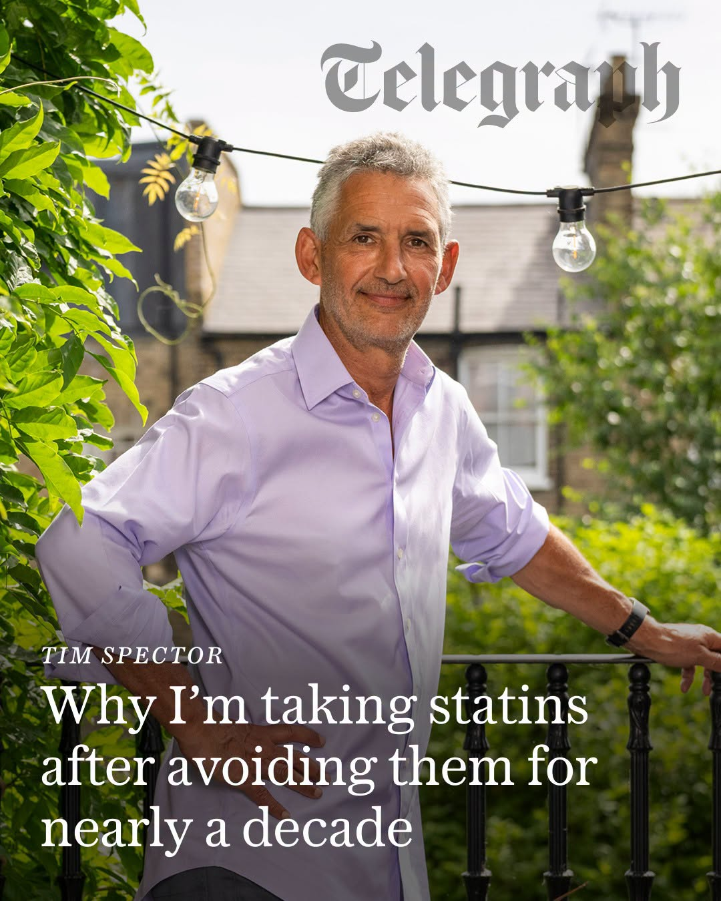

Link that bypasses the paywall:
archive.isArchived web pagearchive.is#statinsHD #ministrokeHD #timspectorHD #statinsinflammationHD #hscrpHD #noceboHD
#statinsmicrobiomeHD #statinsdepressionHD
#statinsdementiaHD
A Telegraph piece in which nutrition scientist Tim Spector explains that his concerns about statin side effects dissipated after personally experiencing health benefits. A personal-story article with no research details in the post.
Link that bypasses the paywall:
archive.isArchived web pagearchive.is#statinsHD #ministrokeHD #timspectorHD #statinsinflammationHD #hscrpHD #noceboHD
#statinsmicrobiomeHD #statinsdepressionHD
#statinsdementiaHD
"My concerns about side effects from the medication dissipated once I experienced their health benefits first-hand..."
Tim Spector explains why, despite understanding why so may are sceptical of statins, he decided to take them ⬇️
The TelegraphWhy I’m taking statins after avoiding them for nearly a decadeMy concerns about side effects from the medication dissipated once I experienced their health benefits first-handtelegraph.co.uk


Louis shares Tim Spector's account of avoiding statins for nearly a decade despite family history, then a mini stroke at 53. Spector says statin muscle cramps were nocebo, and reports hs-CRP fell 40%.
Louis shares a clip arguing statins lower inflammation because they stabilize unstable plaque, which generates the inflammation. The clip cites JUPITER, where rosuvastatin lowered hsCRP 37%. Interventions that address upstream causes, like statins or diet, work better than blocking IL-6 downstream.

Louis summarizes meta-analysis data on average hsCRP reductions from lipid-lowering drugs, noting part of the effect is that high LDL itself is inflammatory.
A long point-by-point rebuttal of anti-statin claims. It cites a meta-analysis linking statins to lower dementia risk, the SAMSON trial on nocebo muscle pain, JUPITER's 44% reduction in major events, and a pooled analysis showing about 5 cardiac events prevented per extra diabetes case.
Louis highlights a 2024 systematic review and meta-analysis of 10 clinical trials (373 subjects) using 18F-FDG PET-CT, a marker of arterial wall inflammation. Statins markedly reduced uptake (target-to-background ratio), significantly so for high-intensity therapy and non-significantly for low-to-moderate intensity.
Louis notes that the latest American College of Cardiology scientific statement recommends measuring and treating hsCRP and points out that statins do this effectively. He reshares a 2022 meta-analysis of 26 RCTs showing statins lowered hs-CRP and CRP in patients with CVD.